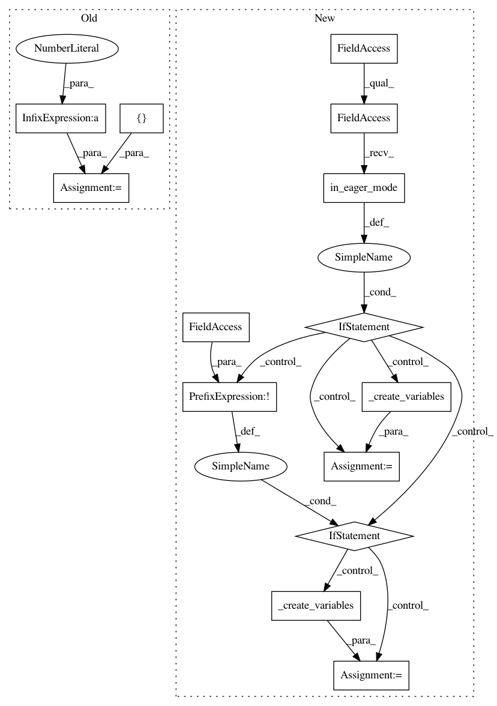

abaa902d9c27646a0528ab7c8b6ee182dce1de2c,deepchem/models/tensorgraph/layers.py,GraphEmbedPoolLayer,embedding_factors,#GraphEmbedPoolLayer#Any#Any#Any#,4408
Before Change
def embedding_factors(self, V, no_filters, name="default"):
no_features = V.get_shape()[-1].value
W = tf.get_variable(
"%s_weights" % name, [no_features, no_filters],
initializer=tf.truncated_normal_initializer(
stddev=1.0 / math.sqrt(no_features)),
dtype=tf.float32)
b = tf.get_variable(
"%s_bias" % self.name, [no_filters],
initializer=tf.constant_initializer(0.1),
dtype=tf.float32)
After Change
def embedding_factors(self, V, no_filters, name="default"):
no_features = V.get_shape()[-1].value
if tfe.in_eager_mode():
if not self._built:
self.variables = self._create_variables(no_features, no_filters, name)
self._built = True
W, b = self.variables
else:
W, b = self._create_variables(no_features, no_filters, name)
V_reshape = tf.reshape(V, (-1, no_features))
s = tf.slice(tf.shape(V), [0], [len(V.get_shape()) - 1])
s = tf.concat([s, tf.stack([no_filters])], 0)
result = tf.reshape(tf.matmul(V_reshape, W) + b, s)
In pattern: SUPERPATTERN
Frequency: 3
Non-data size: 14
Instances
Project Name: deepchem/deepchem
Commit Name: abaa902d9c27646a0528ab7c8b6ee182dce1de2c
Time: 2018-03-26
Author: peastman@stanford.edu
File Name: deepchem/models/tensorgraph/layers.py
Class Name: GraphEmbedPoolLayer
Method Name: embedding_factors
Project Name: deepchem/deepchem
Commit Name: 887f94bd4f292778622304ba627727a6dacad43f
Time: 2018-03-25
Author: peastman@stanford.edu
File Name: deepchem/models/tensorgraph/layers.py
Class Name: IterRefLSTMEmbedding
Method Name: create_tensor
Project Name: deepchem/deepchem
Commit Name: 887f94bd4f292778622304ba627727a6dacad43f
Time: 2018-03-25
Author: peastman@stanford.edu
File Name: deepchem/models/tensorgraph/layers.py
Class Name: AttnLSTMEmbedding
Method Name: create_tensor